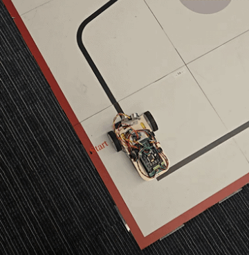

Line-Following Minibot
Autonomous line-following robot using PID control and sensors such as IMUs and motor encoders to navigate a competition course.
I’m an MIT undergraduate with interests spanning robotics, embedded systems, and astrophysics. I love building things sit at the intersection of my interests in hardware and physics, and I love any opportunity to be creative when it comes to both aesthetics and engineering solutions.
This site is a snapshot of the projects that have shaped how I think as an engineer over the past few years, showcasing my skills in programming, embedded systems design, and passion for robotics. I have had a wide variety of academic interests, and it has been so fun to see how the same skills can come in handy in different contexts. Please enjoy this little peek into my design world!
Autonomous line-following robot using PID control and sensors such as IMUs and motor encoders to navigate a competition course.


Custom audio amplifier to boost low frequencies using analog filtering and a tunable op-amp.


Fully analog light-following robot using photoresistors and tunable voltage offsets for motor control.


Embedded Morse coder decoder using PSoC microcontrollers to convert digital input to real-time feedback.

Embedded ultrasonic sensing project with auditory chirp feedback to assist in spatial navigation.

Interactive Simon Says game with random sequences flashed on 4 different colored LEDS.


Undergraduate research project comparing X-ray spectral modeling techniques for measuring black hole spin, to culminate in a first-author publication.


Payload neck brace design and assembly to test the impact of high-G spaceflight on the human cervical spine.


Underwater remotely operated vehicle with an onboard camera and 3-axis motion.


User-controlled Barbie flapping fairy wings for a cosplay design competition.
Summer science project modeling the orbit of near-Earth asteroid 1998 RO4 via application of the Method of Gauss to direct observations.


High school Vex robotics team project, featuring a flywheel with a 75:1 gear ratio.


Science Olympiad rubber-powered balsa wood aircraft designed with flight time and weight restrictions in mind.

Multivariable calculus group project to design and model a telescope to fit in the faring of an Atlas V.